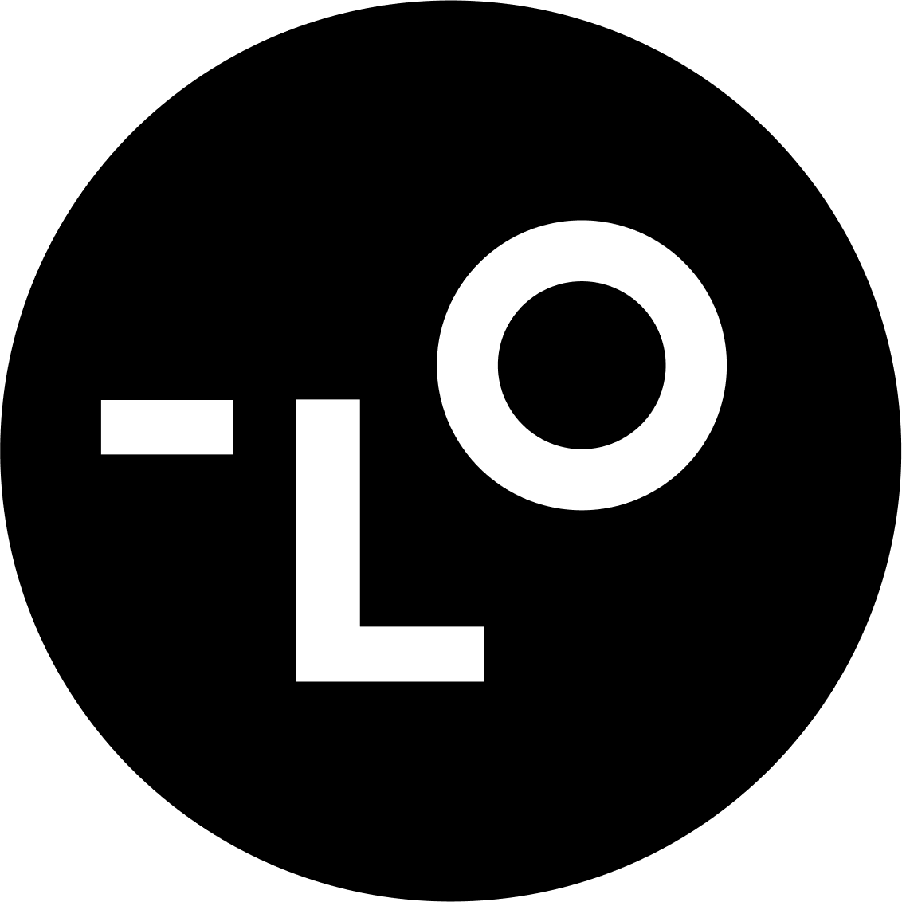
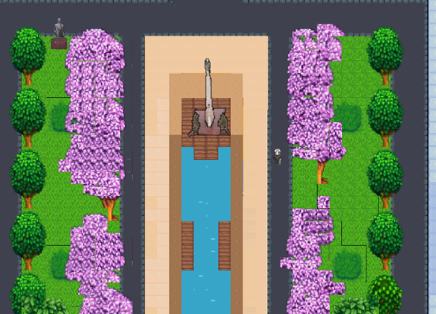

{kind=link}
{kind=link}
About Me
Hi! I am Ken Li (李垦), an incoming PhD student majoring in Artificial Intelligence at Nanjing University and doing research at Pattern Recognition Lab @NJU, supervised by Prof. Chenyang Si and Prof. Tieniu Tan. I got my bachelor degree at Xi’an Jiaotong University.
I have completed several wonderful research internships at CERN, Westlake University, and Lovart.AI, and I have met many open and outstanding researchers during my experience. My current research interests are:
-
Video World Models Learning predictive representations of dynamic visual environments for simulation, understanding, and planning.
-
Generative Models with Physical Intelligence Building generative models that understand physical dynamics and support prediction, reasoning, and action in the real world.
-
Agentic Image & Video Generation Studying both VLM-orchestrated visual agents and generative models with native planning and self-refinement, independent of external VLMs.
-
Human-Centric Agentic AI Building life-grounded agents that unify digital traces and physical observations into user-controlled memory and decision support—the VibeLife vision.
✨ I’m always open to all kinds of cooperation and discussion. You can contact me via email or WeChat: kiyotakali.
News
2026.08: 🚀 Miru is now open source.
2026.06: 🎉 PosterCopilot is accepted by ECCV 2026.
2025.07: 🎉 ALM-PU is accepted by ECML-PKDD 2025 as an oral presentation. Congratulations to Jiazhe Wei!
2025.05: 🏆 Awarded the SenseTime Scholarship, recognizing the top 30 Chinese undergraduates with outstanding achievements in AI.
2025.02: 🎉 NI-GDBA is accepted by WWW 2025 as an oral presentation.
2024.10: 🏆 Awarded the National Scholarship.
Publications

VibeGame: Prompt-to-Game Development with AI-Native Engine and Self-Evolving Adversarial Agent Team
Report, 2026
Wenbo Hu*, , Jiazhe Wei*, Yukang Cao, Weiyi Hong, Jiayi Dai, Chenjun Bai, Jiajun Liang, Yucheng Liao, Ruichuan An, Zeyu Lou, Haofan Wang, Wende Tan, Liucheng Guo, Yueming Lyu, Ziwei Liu, Chenyang Si†

AURORA-LM: Autoencoding Unified Representation for Continuous-Latent Diffusion Language Modeling
Report, 2026
Jiajun Liang*, Yucheng Liao*, Yukang Cao*, Jiazhe Wei, , Wende Tan, Jiankun Zhang, ZY Cui, Jingkang Yang, Liucheng Guo, Shiqi Yang, B. Yang, Caifeng Shan, Ziwei Liu, Chenyang Si†

PosterCopilot: Toward Layout Reasoning and Controllable Editing for Professional Graphic Design
ECCV, 2026
Jiazhe Wei*, , Tianyu Lao, Haofan Wang, Liang Wang, Caifeng Shan, Chenyang Si†

Hide and Find: A Distributed Adversarial Attack on Federated Graph Learning
ICLR Trustworthy AI Workshop, 2026
Jinshan Liu*, , Jiazhe Wei, Bin Shi†, Bo Dong

NI-GDBA: Non-Intrusive Distributed Backdoor Attack Based on Adaptive Perturbation on Federated Graph Learning
WWW, 2025
, Bin Shi†, Jiazhe Wei, Bo Dong

ALM-PU: Positive and Unlabeled Learning with Constrained Optimization
ECML-PKDD, 2025
Jiazhe Wei*, Yuefei Wu*, Bin Shi†, , Bo Dong

CDBridge: A Cross-omics Post-training Bridge Strategy for Context-aware Biological Modeling
ICLR, 2026
Chang Yu*, Siyuan Li*, Zicheng Liu, Jingbo Zhou, Xianglong Guo, Kai Yu, Yuqing Zhou, , Zelin Zang, Zhen Lei†, Stan Z. Li†
* Equal contribution. † Corresponding author.
Internships
NIO
2026.06 - Present, Research Intern, Shanghai, China
Research Topic: World Model for Embodied Scenarios
Working with Shuai Yang.

Lovart, AIGC Research Team
2025.08 - 2026.05, Intern Research Scientist, Shanghai, China
Research Topics: 1) Interactive Image Editing, 2) Agentic Image & Video Generation
Working with Haofan Wang and Chenjian Gao.

AI Research and Innovation Laboratory, Westlake University
2024.11 - 2025.03, Research Intern, Hangzhou, China
Research Topics: 1) Multimodal Models, 2) AI for Biology
Working with Prof. Stan Z. Li and Dr. Chang Yu.
AMS Experiment, CERN & MIT
2025.01 - 2025.02, Research Intern, Geneva, Switzerland
Working with Prof. Samuel C. C. Ting and Dr. Dimitrii Krasnopevtsev.
My Projects

Paranormal-XJTU A 2D narrative game developed with Unity, set on a university campus filled with supernatural incidents and mysteries.Honors and Awards
2026 Nanjing University Doctoral Freshman Presidential Scholarship
2025 SenseTime Scholarship, Awarded to the top 30 Chinese undergraduates with outstanding achievements in AI
2025 First Scholarship for Outstanding Students
2024 National Scholarship
2023 Huawei “Smart Foundation” Scholarship
2023, 2024, 2025 Dean’s List
Education

Xi'an Jiaotong University (XJTU), China
2022.09 - 2026.06
B.Eng. in Computer Science and Technology (Qian Xuesen Honor Class)
• GPA: 92.69 / 100
• Ranking: 1/44
Talks & Reports
2024.12 《拔尖班中的桥牌大师》 -Feature interview in 基础学科拔尖学生培养计划 2.0 内刊
Service
Reviewer: AAAI 2025, WWW 2025, CoRL 2026
Co-Founder of XJTU Deep Learning Seminar
Gallery
Latest updated in Aug. 2026
© Ken Li